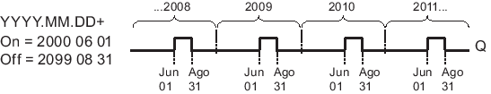
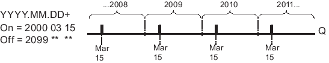
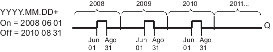
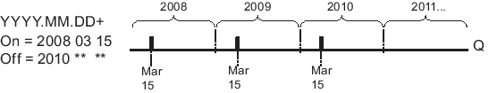
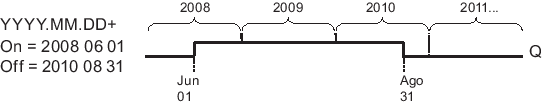
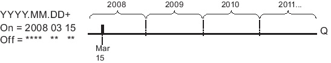
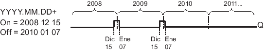
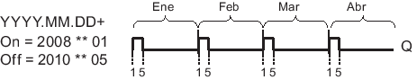
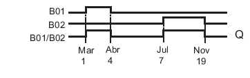

INTERRUPTOR ANUAL
Descripción Breve
La salida se controla mediante una fecha de activación y desactivación configurable. El temporizador puede configurarse para que se active anualmente, mensualmente, o bien con una base de tiempo personalizada. En cualquier modo, la salida del temporizador también puede configurarse como salida de impulso durante el período de tiempo definido. El período de tiempo puede configurase en el rango comprendido entre el 1 de enero de 2000 hasta el 31 de diciembre de 2099.
| Conexión | Descripción |
|---|---|
| Parámetro | En el parámetro No (leva) se configuran el modo del temporizador, los momentos de conexión y desconexión del mismo, así como si la salida es una salida de impulso. |
| Salida Q | Q se activa si está conectada alguna de las levas configuradas. |
Cronogramas
Ejemplo 1: Anual está seleccionado, fecha de conexión = 2000.06.01, fecha de desconexión = 2099.08.31. La salida del temporizador se activa cada año desde el 1 de junio hasta el 31 de agosto.
Ejemplo 2: Anual está seleccionado, Salida de impulso está seleccionada, fecha de conexión = 2000.03.15, fecha de desconexión = 2099.**.**. El temporizador se activa durante un ciclo el 15 de marzo de cada año.
Ejemplo 3: Anual está seleccionado, tiempo de conexión = 2008.06.01, tiempo de desconexión = 2010.08.31. La salida del temporizador se activa el 1 de junio de 2008, 2009 y 2010, y permanece activada hasta el 31 de agosto.
Ejemplo 4: Anual está seleccionado, Salida de impulso está seleccionada, fecha de conexión = 2008.03.15, fecha de desconexión = 2010.**.**. El 15 de marzo de 2008, 2009 y 2010, la salida del temporizador se activa durante un ciclo.
Ejemplo 5: Mensual no está seleccionado, Anual no está seleccionado, tiempo de conexión = 2008.06.01, tiempo de desconexión = 2010.08.31. La salida del temporizador se activa el 1 de junio de 2008 y permanece activada hasta el 31 de agosto de 2010.
Ejemplo 6: Mensual no está seleccionado, Anual no está seleccionado, Salida de impulso está seleccionada, fecha de conexión = 2008.03.15, fecha de desconexión = ****.**.**. El 15 de marzo de 2008, el temporizador se activa durante un ciclo. Puesto que el temporizador no tiene acción mensual ni anual, se emite solo un impulso en la salida del temporizador en la fecha de conexión especificada.
Ejemplo 7: Anual está seleccionado, tiempo de conexión = 2008.12.15, tiempo de desconexión = 2010 01.07. El 15 de diciembre de 2008 y 2009, la salida del temporizador se activa hasta el 7 de enero del año siguiente. Tras desactivarse el temporizador el 7 de enero de 2010, NO se vuelve a activar el 15 de diciembre siguiente.
Ejemplo 8: Mensual activado, tiempo de conexión = 2008.**.01, tiempo de desconexión = 2010.**.05. A partir de 2008, la salida del temporizador se activa el primer día de cada mes y se desactiva el quinto día del mes. El temporizador sigue funcionando de esta manera hasta el último mes del año 2010.
Descripción de la función
El temporizador anual activa o desactiva la salida en determinadas fechas de conexión y desconexión. Las activaciones y desactivaciones se ejecutan a las 00:00. Si la aplicación debe activarse a una hora diferente, utilice un temporizador semanal junto con un temporizador anual en el programa.
La fecha de conexión especifica el mes y el día en el que se activa el temporizador. La fecha de desconexión especifica el mes y el día en el que se desactiva el temporizador. Por lo que respecta a las fechas de conexión y desconexión, tenga en cuenta el orden de los campos. El primer campo define el año, el segundo, el mes y, el tercero, el día.
Si activa la casilla de verificación Mensual, la salida del temporizador se activa cada mes el día indicado como fecha de conexión y permanece activado hasta el día indicado como fecha de desconexión. El año de conexión especifica el primer año en el que se activa el temporizador. El año de desconexión especifica el último año en el que se desactiva el temporizador. 2099 es el último año posible.
Si activa la casilla de verificación Anual, la salida del temporizador se activa cada año el mes y día indicados como fecha de conexión y permanece activado hasta el mes y día indicado como fecha de desconexión. El año de conexión especifica el primer año en el que se activa el temporizador. El año de desconexión especifica el último año en el que se desactiva el temporizador. 2099 es el último año posible.
Si selecciona la casilla de verificación Salida de impulso, la salida del temporizador se activa durante un ciclo en la fecha de conexión indicada y se desactiva luego. Puede seleccionar que el temporizador sea impulsado mensual o anualmente, o bien una sola vez.
Si no activa ninguna de las casillas de verificación (Mensual, Anual o Impulso), puede definir un período específico mediante la fecha de conexión y desconexión. Este período puede abarcar un tiempo cualquiera.
Para procesos que deban activarse y desactivarse varias veces al año, pero en instantes irregulares, puede definir varios temporizadores anuales y combinar lógicamente sus salidas mediante un bloque de función OR.
 |
Los ajustes Anual y Salida de impulso solo están disponibles en los dispositivos a partir de la serie 0BA6. El ajuste Mensual solo está disponible en los dispositivos a partir de la serie 0BA4. |
Descripción de la función
El reloj interno en tiempo real de LOGO! sigue funcionando incluso si se produce un corte de alimentación. El tiempo de respaldo depende de la temperatura ambiente y es típicamente de 20 días (para los dispositivos LOGO! 0BA7 y superiores) o de 80 horas (para los dispositivos LOGO! 0BA6) a una temperatura ambiente de 25 C. Si se utiliza la tarjeta de batería LOGO! opcional o la tarjeta de memoria/batería combinada LOGO!, LOGO! puede respaldar la hora del reloj hasta dos años.
Particularidades acerca de la configuración
En los campos puede introducir valores numéricos para el mes y el día. Introduzca valores reales para los meses y días. De lo contrario, LOGO!Soft Comfort visualizará un aviso de error.
El icono Calendario ofrece una manera cómoda de ajustar la fecha. Se abre una ventana en la que puede seleccionar los días y los meses mediante botones.
Ejemplo de configuración
La salida de un LOGO! debe activarse anualmente desde el 1 de marzo hasta el 4 de abril y desde el 7 de julio hasta el 19 de noviembre. Para ello se requieren dos bloques que deben parametrizarse respectivamente para las fechas de conexión determinadas. Las salidas se combinan lógicamente mediante un bloque OR.

Posicione dos funciones especiales "Temporizador anual" en la interfaz de programación. Configure 03.01 como tiempo de conexión y 04.04 como tiempo de desconexión para el primer temporizador anual. Configure 07.07 como tiempo de conexión y 11.19 como tiempo de desconexión para el segundo temporizador anual.
Combine los bloques lógicamente mediante un bloque OR. El estado de señal de la salida del bloque OR es 1 si está activado por lo menos uno de los dos temporizadores anuales.

EJERCICIOS
EJERCICIO 1
- Parametriza una capsula del tiempo que se abrirá en el año 2040, esta se abrirá el 25 de diciembre.
- El contador empieza a contar el 31 de diciembre del 2025.
- Una luz avisa cuando se abre esta capsula.
EJERCICIO 2
- Un iraní coloca una bomba en el estadio azteca de la cdmx, esta bomba esta escondida y parametrizada para que explote en el primer partido que suceda del mundial en ese estadio, el día 11 de junio del 2026, esto por que se molesto por que su selección no clasifico al mundial.
- La bomba se coloco el día 23 de noviembre del 2025, es decir que acabando el conteo esta explotara.
- Una bocina y un led se encenderán al momento de explotar, la bocina trae cantos iranies.
SOLUCIÓN DE LOS EJERCICIOS
Temporizador anual

Solución ejercicio 1

Solución ejercicio 2